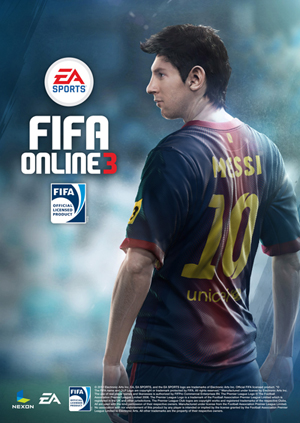

기업 소개 : 1994년 설립, 올해로 창립 20주년을 맞이한 (주)넥슨은 연 매출 1조 6386억원,(2013년 말 넥슨 일본법인 연결매출 기준) 사원수 4,500명 규모의 글로벌 게임회사 입니다. 2002년 일본, 2005년 미국, 2007년 유럽에 현지법인을 설립하며 일찌감치 해외 시장 개척에 앞장서온 넥슨은 현재 일본,중국,대만 등 동아시아 3국을 비롯해 북미지역과 유럽, 남미 등 전 세계 110여개국에 진출해 150여 개의 게임을 서비스 중이며, 현재 14억 명의 사용자(계정)을 확보하고 있습니다. 경기도 성남시 분당구 판교로에 위치하고 있으며, 온라인, 모바일, 소셜 게임의 개발 및 서비스 사업을 하고 있습니다.
기업개요 및 비전: 1994년 12월 설립, 올해로 창립 20주년을 맞은 넥슨은 인터넷 산업 발전과 그 역사를 함께해 온 대한민국 대표 게임기업이다. 불모지 같았던 국내 게임산업 환경 속에서 세계 최초의 그래픽 MMORPG이자 최장수 상용화 온라인 게임 ‘바람의나라(1996)’를 개발해 온라인 게임이라는 신시장을 개척했으며, ‘퀴즈퀴즈(現 큐플레이/1999)’를 통해 게임 내에서 ‘부분유료화(Free to Play)’라는 새로운 비즈니스 모델을 선보였다. 캐주얼 게임의 효시 ‘크레이지아케이드 비엔비’를 비롯해 ‘마비노기’와 국민 게임 ‘카트라이더’, ‘메이플스토리’, ‘마비노기 영웅전’, ‘카운터스트라이크 온라인’, ‘FIFA 온라인 3’ 등 캐주얼, RPG, FPS, 스포츠 등 전 연령층을 대상으로 한 여러 장르의 게임을 다양한 플랫폼을 통해 서비스하며, 한국과 해외에서 게임 IP(Intellectual Property, 지적재산권) 개발 및 퍼블리싱의 중추 역할을 하고 있다. 이 외에도 자사 게임의 IP를 활용한 출판, 애니메이션, 캐릭터 상품 출시 등 라이선스 사업을 활발히 펼치는 한편 기업 인수 및 합병을 통해 다수의 게임 개발사를 자회사로 편입시키는 등 미래 성장동력 확보를 위한 적극적인 행보를 이어가고 있다. 